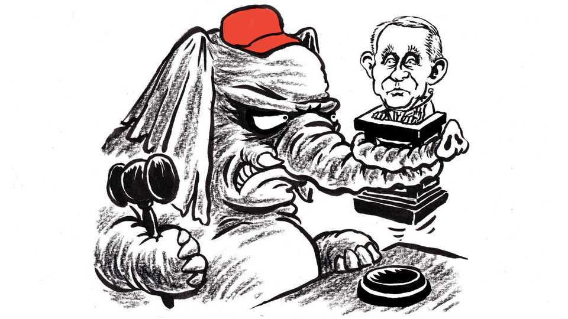

The real covid-19 scandal is still unfolding
The failure to reckon with lives needlessly lost will make the next pandemic deadlier

Aug 20th 2026
For all the zeal Congress has shown in investigating America’s response to the covid-19 pandemic, it has been strangely uninterested in exploring a basic question: why did so many Americans die relative to the numbers who succumbed to the virus in other rich countries? Understanding the answer would seem relevant to guarding against the next, inevitable pandemic.
Many countries were slow to react, but as they learned about the transmissibility of the virus, and as vaccines became available, they rapidly cut their death rates. Not so America. “The death rate is now about eight times higher in America than in the rest of the rich world,” The Economist reported in September 2021. In all, America lost more than 1.1m people to covid, or roughly 3,500 lives out of every million. This should haunt every official who was in a position to combat the pandemic. Germany’s death rate was about 2,000 per million people and Canada’s fewer than 1,400, notes Donald McNeil in his book “The Wisdom of Plagues”. Had America managed to split that difference, at about 1,700 per million, “We would have lost about 540,000 fewer dead,” he writes. “Who speaks for them?”
Not Congress. America’s lethal underperformance once again went ignored when the Senate Homeland Security Committee recently questioned Dr Anthony Fauci, a crucial adviser on covid to Donald Trump and then to Joe Biden. (Mr Trump later turned on him.) The hearing focused instead on the usual obsessions for which Dr Fauci has become the Republican scapegoat—some absurd and others valid but distantly related, at best, to protecting potential victims of a future plague. While Democrats mostly gave speeches rather than ask questions, Republicans pursued theories that the virus leaked from a Chinese lab, that Bill Gates had some nefarious role, that Dr Fauci had been out to enrich himself through awards for his service—an odd complaint when they do not object to the president campaigning for a $1m Nobel prize.
Having testified often to Congress during his 54 years at the National Institutes of Health—38 as director of the National Institute of Allergy and Infectious Diseases—Dr Fauci, who is 85, was reduced to repeatedly invoking the Fifth Amendment, including when asked the colour of his tie. In his opening statement, his hands shaking as he read it, Dr Fauci said his lawyers had advised that recourse because the committee’s chairman, Rand Paul of Kentucky, had made clear an intent to see him behind bars despite a blanket pardon issued by Mr Biden. In other words the Senate could not inquire into a health crisis that racked the country because a key witness feared a perjury trap, and rightly so.
Why did so many Americans die? High rates of obesity, diabetes, heart disease and elderliness made them more vulnerable. But government bungling meant America was testing 100 people a day in early 2020 when other countries were testing tens of thousands; that masks and lockdowns were deployed erratically; that contact tracing proved too challenging for the country first to the Moon. Most senselessly, so many Americans died because so many failed to take the vaccines that Mr Trump, in his most constructive act as president, succeeded in rushing into existence.
It is, of course, those vexing vaccines that compel Republicans to look away from the basic question about the pandemic, and to hound Dr Fauci instead. Attempting to square the greatness of Mr Trump with the supposed vileness of the vaccines has inspired his party to heroic feats of doublethink. “President-elect Trump’s Operation Warp Speed—which encouraged the rapid development and authorisation of the COVID-19 vaccine—was highly successful and helped save millions of lives,” declared the committee created by the House to investigate covid in 2024, summarising two years of work. The very next sentence reads: “Contrary to what was promised, the COVID-19 vaccine did not stop the spread or transmission of the virus.”
Mr Trump has struggled to escape this self-imposed contradiction. Even as he declined to urge the public to get vaccinated, he and his wife, Melania, secretly had the vaccine before he left office in January 2021. But as Mr Biden and other world leaders delivered the shots, Mr Trump wanted the credit he deserved, and in December that year he told supporters that he had received a booster. “What we’ve done is historic,” he insisted when the crowd booed. “Don’t let them take it away.” He has since let them take his glory away, and endangered more Americans, by questioning the efficacy and safety of vaccines for covid, and other illnesses.
The latest attack on Dr Fauci, concocted from his private texts disclosed by Republican senators on August 10th, is that he covered up a threat of miscarriage that the vaccine posed to pregnant women. In fact, the record shows Dr Fauci was consistent, publicly and privately, in counselling a weighing of risks and benefits until studies showed the vaccine was safe in pregnancy—which they have since done. His critics have not produced evidence the vaccine causes miscarriages.
Dr Fauci made mistakes, including not disclosing early on that some top virologists initially worried the virus might be man-made. He could be arrogant. But he was not responsible for the worst excesses of the covid response. Those endless school shutdowns were the work of local officials and union leaders. Senator Paul’s release of Dr Fauci’s private diary has exposed his vanity, his delight in every gushing appraisal by the media or some celebrity. But the diary also reveals a conscientious public servant trying to save as many lives as he could, struggling against the constraints that hobbled America relative to its peers. His summons before the Senate committee was surely intended to humiliate if not incriminate him. It should embarrass the entire country. ■